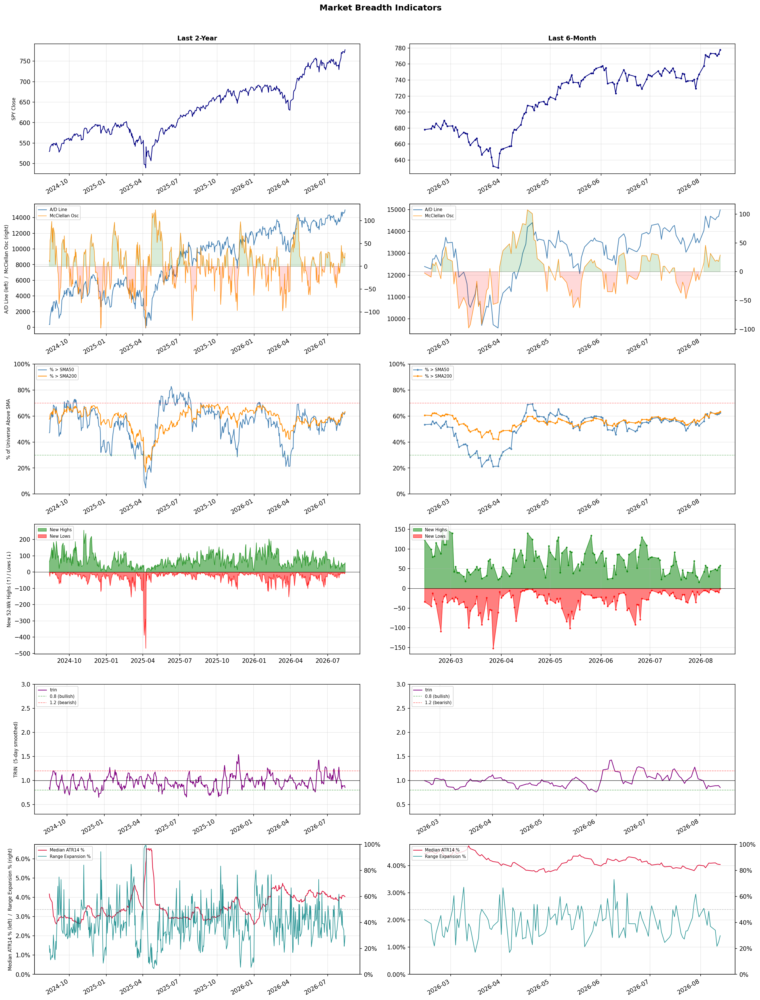

A daily market breadth and sector rotation report for active investors
| Item | Read |
|---|---|
| Regime | Risk-On |
| Risk posture | Aggressive |
| Universe | 1,334 stocks tracked · 58 new 52-week highs · 30 active swing setups |
| Breadth | 62.6% of tracked stocks are above SMA50, new highs exceed new lows (58 vs 1) |
| Leadership | Diagnostics & Research, Health Information Services, and Computer Hardware |
| Weakest groups | Solar, Chemicals, and Agricultural Inputs |
Use this report to prioritize research and chart review; validate entries, stops, liquidity, earnings, and risk before acting.
| Item | Read |
|---|---|
| Primary read | Risk-On regime with Aggressive risk posture. |
| Research queue | TWST, NEO, WGS, IQV, OPK |
| Leadership focus | Diagnostics & Research, Health Information Services, and Computer Hardware |
| Caution list | Solar, Chemicals, and Agricultural Inputs |
| Review prompt | Check extension risk, chart location, fundamentals, valuation, and earnings before using any research row. |
| Item | Read |
|---|---|
| Primary read | 0 active risk warnings; use screen output as watchlist input only. |
| Bullish screens | DELL, P, NET, NTAP, PANW |
| Bearish screens | none |
| Alerts / levels | Automated trigger, stop, ATR, liquidity, reward/risk, and event-risk levels are pending future enrichment. |
| Review prompt | Open the linked chart, define trigger and invalidation, then check liquidity and event risk independently. |
Risk Posture: Aggressive — screen backdrop shows broad participation; still validate each setup independently
Metric context: McClellan below -50 = elevated selling pressure; below -100 = washout territory. Range Expansion = share of stocks with daily range above their 20-day average. Signal Density = share of tracked names appearing in signal screens.
| Breadth Date | % > SMA50 | % > SMA200 | New Highs | New Lows | McClellan | Median Range | Avg Range | Median ATR14 | Range Expansion | Signal Density |
|---|---|---|---|---|---|---|---|---|---|---|
| 2026-08-13 | 62.6% | 63.4% | 58 | 1 | 29.0 | 3.0% | 3.8% | 4.0% | 29.8% | 4.2% |

Prior comparison date: August 12, 2026
| Metric | Prior | Current | Change |
|---|---|---|---|
| Regime | Risk-On | Risk-On | unchanged |
| Risk Posture | Selective | Aggressive | changed |
| % > SMA50 | 61.4% | 62.6% | +1.2 pts |
| % > SMA200 | 61.6% | 63.4% | +1.9 pts |
| New Highs | 53 | 58 | +5 |
| New Lows | 11 | 1 | +10 |
Top-10 industries entering: Asset Management and Banks - Diversified. Top-10 industries leaving: Copper and Medical Instruments & Supplies. New multi-signal long setups: AMBP, AMT, CMBT, DELL, ENTG, FBP, GILD, HOMB, HPE, MRP. New multi-signal short setups: none.
| Status | Tickers | Read |
|---|---|---|
| Added | AMBP, AMT, CMBT, DELL, ENTG, FBP, GILD, HOMB | New technical screen matches vs prior report. |
| Removed | AEHR, ANET, APP, BAC, BNY, CGAU, ET, ETN | No longer present in today's technical screen matches. |
| Still Active | APPS, ASB, BNS, DXCM, FSLY, MPC, NRIX, P | Appeared in both current and prior reports. |
| Promoted | none | Model Screen Score improved by at least 15 points. |
| Downgraded | DXCM | Model Screen Score declined by at least 15 points. |
| Direction | Industry | ETF | Prior Rank | Current Rank | Days | Rank Change |
|---|---|---|---|---|---|---|
| Rose | Oil & Gas Integrated | XLE | 84 | 16 | 42 | +68 |
| Rose | Copper | COPX | 85 | 18 | 35 | +67 |
| Rose | Gold | GDX | 86 | 25 | 42 | +61 |
| Rose | Semiconductor Equipment & Materials | SOXX | 77 | 17 | 14 | +60 |
| Rose | Computer Hardware | XLK | 59 | 3 | 14 | +56 |
Bull: The Oil & Gas Integrated sector is likely experiencing rising relative strength due to increasing fair value estimates for major oil stocks, driven by higher oil prices, as highlighted in the recent Morningstar report. Additionally, the positive sentiment reflected in the headlines, such as the identification of the best energy stocks for 2026 by The Motley Fool and U.S. News, suggests growing investor confidence in the sector's long-term prospects amidst mixed overall market performance. This combination of favorable price dynamics and bullish analyst outlooks is propelling the sector's relative strength upward.
Bear: While rising fair value estimates and higher oil prices may seem positive, the recent trend of energy stocks edging lower indicates underlying weakness and potential volatility in the sector. Additionally, the overall mixed performance of US equities suggests that investor confidence may be fragile, and any geopolitical or economic headwinds—such as potential supply chain disruptions or shifts in energy policy—could quickly reverse the gains in oil prices, undermining the bullish outlook. Furthermore, the focus on long-term prospects may overlook the cyclical nature of the oil and gas industry, which is susceptible to rapid changes in demand and regulatory pressures.
Verdict: The Oil & Gas Integrated sector is rising primarily due to increasing fair value estimates and higher oil prices, which are bolstered by positive analyst sentiment and investor confidence in the sector's long-term prospects. However, key risks include potential volatility stemming from geopolitical tensions and economic shifts that could disrupt supply chains or alter energy policies, potentially reversing recent gains and impacting the sector's performance. Investors should remain vigilant and consider these risks when evaluating their positions in this cyclical industry.
Sources: Yahoo Finance, Google News
Bull: Copper is experiencing a rise in relative strength primarily due to its critical role in the electrification of industries, particularly as the demand for electric vehicles and renewable energy solutions accelerates. Headlines such as "Forget Software: The COPX ETF Is the Pick-and-Shovel AI Trade Hiding in Plain Sight" and "Copper Is the New Crude" highlight copper's essential position in emerging technologies, positioning it as a key commodity in the transition to a greener economy. Additionally, the bullish sentiment around copper miners, as indicated by articles discussing top-performing stocks and ETFs, reflects investor confidence in the sector's growth potential amid increasing global demand.
Bear: While the narrative surrounding copper's role in electrification and the green economy is compelling, it overlooks significant headwinds that could undermine this bullish outlook. The copper market is highly cyclical and susceptible to economic slowdowns, particularly in major consuming countries like China, where demand may falter due to tightening monetary policy and slowing growth. Additionally, the recent surge in copper prices may lead to increased production from miners, potentially resulting in oversupply and price corrections that could negatively impact the COPX ETF.
Verdict: Copper's rising strength is fundamentally driven by its critical role in the electrification of industries, particularly with the accelerating demand for electric vehicles and renewable energy solutions, positioning it as a key commodity in the transition to a greener economy. However, investors should be cautious of potential headwinds, particularly from economic slowdowns in major consuming countries like China, which could dampen demand and lead to oversupply, risking price corrections in the copper market.
Sources: Yahoo Finance, Google News
Bull: Gold is experiencing a rise in relative strength primarily due to increasing demand as investors seek safe-haven assets amid economic uncertainty and potential inflationary pressures. Recent headlines indicate a bullish sentiment in the gold market, with prices breaking higher after a challenging period, suggesting renewed investor confidence. Additionally, the performance of gold miners, as reflected in the rally of GDX and the drop in DUST, underscores the sector's resilience and attractiveness compared to other industries, further driving interest in gold as a strategic investment.
Bear: While the recent rise in gold prices and the performance of gold miners like GDX may suggest bullish sentiment, this trend could be misleading as it may be driven more by speculative trading rather than fundamental demand. Additionally, the potential for rising interest rates and a strengthening dollar could create significant headwinds for gold, as these factors typically diminish the appeal of non-yielding assets like gold. Furthermore, the increasing interest in alternative investments, such as silver ETFs, may divert capital away from gold, challenging its long-term growth prospects.
Verdict: The recent rise in gold prices is fundamentally driven by heightened demand for safe-haven assets amid economic uncertainty and inflation concerns, as evidenced by the bullish sentiment reflected in gold miners' performance. However, investors should be cautious of the potential headwinds posed by rising interest rates and a strengthening dollar, which could undermine gold's appeal as a non-yielding asset and divert capital towards alternative investments like silver ETFs.
Sources: Yahoo Finance, Google News
Bull: The Semiconductor Equipment & Materials sector is experiencing a surge in relative strength primarily due to robust earnings reports from key players like Lumentum and Coherent, which indicate strong demand in optics and semiconductor technologies. Additionally, the significant rally in major semiconductor stocks, highlighted by Intel's impressive 176% gain this year and a sector-wide boost from AI capital expenditures, suggests heightened investor confidence and optimism about future growth in the industry. This positive momentum is further supported by favorable macroeconomic indicators, such as in-line consumer inflation data, which bolster the overall tech sector's performance.
Bear: While the recent earnings reports from companies like Lumentum and Coherent may appear strong, they could be indicative of short-term trends rather than sustainable growth, especially given the cyclical nature of the semiconductor industry. Additionally, the significant rally in major semiconductor stocks, including Intel's 176% gain, raises concerns about overvaluation and profit-taking, particularly as macroeconomic uncertainties and potential supply chain disruptions loom, which could dampen future demand and profitability. Furthermore, the focus on AI capital expenditures may be overstated, as the broader market could face headwinds from geopolitical tensions and tightening monetary policy that could negatively impact tech investment.
Verdict: The Semiconductor Equipment & Materials sector's rise is fundamentally driven by strong earnings from key players, reflecting robust demand in optics and semiconductor technologies, alongside significant investor enthusiasm fueled by AI-related capital expenditures. However, investors should remain cautious of potential overvaluation and the cyclical nature of the industry, as macroeconomic uncertainties and supply chain disruptions could pose risks to sustained growth and profitability.
Sources: Yahoo Finance, Google News
Bull: The rising relative strength of the Computer Hardware sector can be attributed to the increasing optimism surrounding technological advancements, particularly in areas like AI and quantum computing, as highlighted by multiple headlines discussing the best stocks in these domains. Additionally, the positive sentiment in the broader tech sector, evidenced by mixed but generally favorable updates on tech stocks and ETFs, suggests that investors are confident in the growth potential of hardware companies that support these emerging technologies. This is further reinforced by firms raising price targets for major players like Cisco, despite short-term concerns, indicating a belief in their long-term profitability and resilience.
Bear: While the rising relative strength in the Computer Hardware sector may seem promising, it is essential to recognize that the recent headlines reflect a mix of optimism and caution, particularly with Cisco's significant drop due to gross margin fears. This suggests underlying vulnerabilities in the sector that could undermine long-term growth, as companies may struggle to maintain profitability amid rising costs and competitive pressures. Furthermore, the excitement around AI and quantum computing stocks could be overstated, potentially leading to inflated valuations that may not be sustainable in a cooling economic environment.
Verdict: The Computer Hardware sector's rising strength is fundamentally driven by heightened investor optimism surrounding technological advancements in AI and quantum computing, which are expected to drive demand for hardware solutions. However, a key risk lies in the potential for inflated valuations and profitability challenges, as evidenced by Cisco's recent gross margin concerns, which could undermine the sector's growth if economic conditions deteriorate. Investors should remain cautious and monitor companies' ability to sustain margins amidst rising costs and competitive pressures.
Sources: Yahoo Finance, Google News
| Direction | Industry | ETF | Prior Rank | Current Rank | Days | Rank Change |
|---|---|---|---|---|---|---|
| Fell | REIT - Healthcare Facilities | XLRE | 7 | 77 | 14 | -70 |
| Fell | Healthcare Plans | IHF | 1 | 63 | 42 | -62 |
| Fell | Leisure | N/A | 11 | 73 | 14 | -62 |
| Fell | Beverages - Non-Alcoholic | XLP | 19 | 78 | 42 | -59 |
| Fell | REIT - Hotel & Motel | XLRE | 3 | 62 | 35 | -59 |
Bear: While the bull analyst attributes the healthcare REIT sector's relative weakness to broader market trends and a shift in investor focus, the reality is that the fundamentals of the healthcare facilities sector are under significant strain. Rising interest rates and inflationary pressures are increasing operational costs for these REITs, while reimbursement challenges and regulatory pressures in the healthcare industry are further squeezing margins. This combination of external economic factors and internal industry-specific headwinds suggests that the decline in healthcare REIT valuations may be more than just a temporary market reaction; it could indicate deeper, systemic issues that investors should be wary of.
Bull: The relative weakness of the Healthcare Facilities REIT sector can largely be attributed to broader market trends, particularly the recent strength in financial stocks, as highlighted in the sector updates. This shift in investor focus away from healthcare REITs, compounded by negative sentiment following American Healthcare REIT's 5.2% drop amid sector-wide selling, suggests that investors may be reallocating capital to sectors perceived as more stable or growth-oriented in the current economic environment. Additionally, the overall market's performance, as noted in the stock market news, indicates a potential risk-off sentiment that could be impacting healthcare REIT valuations.
Verdict: The decline in healthcare facilities REIT valuations is primarily driven by rising interest rates and inflation, which are increasing operational costs and squeezing margins amid ongoing reimbursement challenges and regulatory pressures. Investors should be cautious, as these fundamental issues suggest that the sector's weakness may not be a temporary market reaction but rather indicative of deeper systemic vulnerabilities that could impact long-term performance. It is advisable to closely monitor these economic and industry-specific factors before making investment decisions in this sector.
Sources: Yahoo Finance, Google News
Bear: While the bull analyst attributes the sector's relative weakness to profit-taking and mixed earnings, the underlying fundamentals of the Healthcare Plans industry suggest more significant challenges ahead. Rising regulatory pressures, increasing scrutiny on healthcare costs, and potential changes in reimbursement models could undermine profit margins and growth prospects for major players like UnitedHealth and Humana. Additionally, the broader economic environment, characterized by inflation and potential recessionary pressures, may lead to reduced consumer spending on healthcare services, further dampening investor sentiment.
Bull: The relative weakness in the Healthcare Plans sector, as indicated by the falling trend against other industries, can be attributed to recent profit-taking after strong performances, particularly in stocks like UnitedHealth that recently hit a 52-week high. Additionally, mixed earnings reports in Q2 have created uncertainty about growth prospects, as highlighted in the Morningstar article, leading to a cautious sentiment among investors despite the long-term bullish outlook for healthcare stocks. This environment has prompted analysts to reassess their positions, as seen in discussions about Humana and UnitedHealth, which may be contributing to the sector's current underperformance.
Verdict: The Healthcare Plans sector's recent decline appears to stem from profit-taking after strong stock performances, coupled with mixed earnings reports that have raised investor caution about future growth. However, a key risk looms from rising regulatory pressures and potential changes in reimbursement models, which could significantly impact profit margins and demand, warranting close monitoring of these factors in investment strategies. Investors should remain vigilant about the broader economic environment, as inflation and recessionary pressures could further affect consumer spending on healthcare services.
Sources: Yahoo Finance, Google News
Bear: While the bull analyst points to potential growth opportunities within the Leisure industry, the persistent decline in relative strength and mixed Q1 earnings results indicate deeper, systemic issues that are unlikely to resolve swiftly. Inflationary pressures and changing consumer behavior suggest that discretionary spending on leisure activities may remain constrained, particularly as consumers prioritize essential goods and services. Furthermore, the identification of attractive stocks for 2026 may be overly optimistic, as the industry faces significant headwinds from economic uncertainty and evolving market dynamics that could hinder a meaningful recovery.
Bull: The Leisure industry is experiencing a decline in relative strength primarily due to broader macroeconomic pressures affecting consumer discretionary spending, as highlighted by the recent Q1 earnings reports indicating mixed results for companies like Acushnet and Live Nation. Additionally, the headlines suggest a growing concern over consumer sentiment, with EVT Limited's slide reflecting a potential loss of momentum in leisure stocks, which may be driven by inflationary pressures and changing consumer behavior post-pandemic. However, the identification of attractive travel and tourism stocks for 2026 indicates that there are still opportunities for growth within the sector, suggesting a potential rebound as economic conditions improve.
Verdict: The Leisure industry's decline is fundamentally driven by macroeconomic pressures that have led to constrained consumer discretionary spending, as evidenced by mixed Q1 earnings and declining consumer sentiment. The key risk from the bear case is that persistent inflation and shifting consumer priorities may continue to limit spending on leisure activities, making a swift recovery unlikely despite potential growth opportunities identified for 2026. Investors should remain cautious and closely monitor economic indicators and consumer behavior trends before making significant commitments in this sector.
Sources: Google News
Bear: While the bull analyst attributes the falling relative strength of the Beverages - Non-Alcoholic sector to mixed performance and shifting consumer preferences, it is crucial to recognize that these trends may indicate a more fundamental shift in consumer behavior away from traditional non-alcoholic beverages in favor of alternatives, including alcohol and health-focused products. Furthermore, the recent headlines highlighting mixed performance and the potential impact of producer inflation data suggest that the sector may be facing increasing cost pressures and declining demand, which could hinder growth prospects and profitability in the long run, making it a less attractive investment compared to other sectors.
Bull: The falling relative strength of the Beverages - Non-Alcoholic sector can likely be attributed to mixed performance indicators and shifting consumer preferences highlighted in recent headlines. While the sector saw some gains, as noted in the updates about consumer stocks advancing, the overall mixed signals—especially in the context of broader consumer stock performance—suggest that investors may be favoring other sectors that are experiencing stronger momentum, such as alcohol stocks, which are gaining attention amid changing consumer preferences. Additionally, the upcoming producer inflation data may be causing caution among investors, impacting the non-alcoholic beverage sector's relative attractiveness.
Verdict: The non-alcoholic beverage sector's decline appears driven by a fundamental shift in consumer preferences towards alcohol and health-focused alternatives, coupled with rising cost pressures from producer inflation. This trend poses a significant risk, as declining demand for traditional non-alcoholic beverages could hinder growth and profitability, making it essential for investors to reassess their positions and consider reallocating to sectors with stronger momentum.
Sources: Yahoo Finance, Google News
Bear: While the bull analyst highlights a shift in investor sentiment towards financial stocks, this could signal deeper issues within the hotel and motel REIT sector, such as ongoing challenges related to rising interest rates, inflationary pressures, and potential declines in travel demand. Additionally, the positive coverage of individual hotel REITs like Host Hotels & Resorts may not be sufficient to offset the broader sector's vulnerabilities, particularly if economic conditions worsen or consumer spending on travel and hospitality declines, leading to lower occupancy rates and rental income across the sector.
Bull: The REIT - Hotel & Motel sector is likely experiencing a decline in relative strength due to broader market dynamics favoring financial stocks, as indicated by multiple headlines highlighting the rise of financial stocks in recent trading sessions. This shift in investor sentiment may be diverting capital away from the hospitality sector, despite positive coverage of specific hotel REITs like Host Hotels & Resorts, which suggests that while individual companies may perform well, the overall sector is struggling to attract investor interest amid a more favorable outlook for financials. Additionally, the focus on other outperforming sectors, as noted in the Morningstar article, may further contribute to the relative weakness of the hotel and motel REITs.
Verdict: The decline in the REIT - Hotel & Motel sector is primarily driven by a shift in investor sentiment towards financial stocks, which may indicate a broader market preference for sectors perceived as more resilient amid rising interest rates and inflation. Key risks include the potential for declining travel demand and lower occupancy rates, which could exacerbate vulnerabilities in the hospitality sector, making it crucial for investors to closely monitor economic indicators and consumer spending trends.
Sources: Yahoo Finance, Google News
| Industry | Rank | ETF | 7d | 14d | 28d | 42d | Chg 42d | Size | 20D | 60D | Composite | Active Setups |
|---|---|---|---|---|---|---|---|---|---|---|---|---|
| Diagnostics & Research | 1 | N/A | 5 | 5 | 2 | 4 | +3 | 16 | 10.5% | 58.5% | 0.927 | 0 |
| Health Information Services | 2 | N/A | 28 | 32 | 4 | 8 | +6 | 12 | 10.5% | 49.9% | 0.908 | 0 |
| Computer Hardware | 3 | XLK | 57 | 59 | 55 | 39 | +36 | 15 | 33.3% | 33.3% | 0.907 | 1 |
| Software - Application | 4 | IGV | 6 | 25 | 27 | 51 | +47 | 74 | 16.3% | 28.4% | 0.892 | 1 |
| Software - Infrastructure | 5 | IGV | 15 | 41 | 23 | 20 | +15 | 62 | 13.8% | 24.1% | 0.866 | 1 |
| Oil & Gas Refining & Marketing | 6 | CRAK | 1 | 1 | 1 | 47 | +41 | 7 | 8.5% | 26.6% | 0.857 | 0 |
| Insurance Brokers | 7 | N/A | 10 | 16 | 12 | 17 | +10 | 6 | 10.5% | 25.0% | 0.839 | 0 |
| Medical Devices | 8 | N/A | 18 | 9 | 30 | 32 | +24 | 20 | 9.6% | 25.7% | 0.836 | 1 |
| Asset Management | 9 | N/A | 21 | 44 | 54 | 62 | +53 | 29 | 10.5% | 11.9% | 0.817 | 1 |
| Banks - Diversified | 10 | N/A | 4 | 4 | 8 | 11 | +1 | 16 | 3.8% | 20.3% | 0.804 | 0 |
Rank columns (7d–42d) show the industry's rank that many trading days ago — lower is stronger. Chg 42d = rank change vs 42 trading days ago — positive means the industry moved up. 20D and 60D are the mean stock return within the industry over that period. Active Setups: count of today's swing-trade candidates from this industry appearing across all signal screens.
| Industry | Rank | ETF | 7d | 14d | 28d | 42d | Chg 42d | Size | 20D | 60D | Composite | Active Setups |
|---|---|---|---|---|---|---|---|---|---|---|---|---|
| Solar | 88 | TAN | 86 | 86 | 67 | 67 | -21 | 8 | -11.3% | -22.3% | 0.076 | 0 |
| Chemicals | 87 | N/A | 87 | 65 | 82 | 87 | 0 | 8 | -4.1% | -26.0% | 0.138 | 0 |
| Agricultural Inputs | 86 | N/A | 59 | 31 | 44 | 81 | -5 | 5 | -6.0% | -7.7% | 0.153 | 1 |
| REIT - Diversified | 85 | N/A | 72 | 53 | 43 | 57 | -28 | 5 | -6.4% | -2.6% | 0.160 | 1 |
| Footwear & Accessories | 84 | N/A | 70 | 55 | 40 | 34 | -50 | 5 | -9.0% | 8.7% | 0.200 | 0 |
| Auto Manufacturers | 83 | N/A | 65 | 49 | 68 | 79 | -4 | 10 | -3.9% | -3.1% | 0.226 | 0 |
| Utilities - Regulated Electric | 82 | XLU | 77 | 57 | 37 | 40 | -42 | 29 | -4.3% | 0.2% | 0.249 | 0 |
| Gambling | 81 | N/A | 84 | 66 | 42 | 27 | -54 | 5 | -7.0% | -1.4% | 0.250 | 0 |
| Utilities - Independent Power Producers | 80 | XLU | 88 | 82 | 80 | 83 | +3 | 5 | -0.2% | -2.5% | 0.251 | 0 |
| Integrated Freight & Logistics | 79 | N/A | 74 | 61 | 26 | 38 | -41 | 7 | -7.4% | 3.4% | 0.277 | 0 |
Rank columns (7d–42d) show the industry's rank that many trading days ago — lower is stronger. Chg 42d = rank change vs 42 trading days ago — positive means the industry moved up. 20D and 60D are the mean stock return within the industry over that period. Active Setups: count of today's swing-trade candidates from this industry appearing across all signal screens.
These are research candidates from top-ranked stocks, capped at five names per industry to avoid over-concentration. Returns shown (60D, 120D, 250D) are historical — they reflect where prices have already moved, not forward expectations. Extension Risk flags names that may require extra patience or a better entry point. They are not buy signals.
Chart: TV = TradingView chart (opens in browser); PDF = local chart file (if downloaded).
| Ticker | Name | Industry | Industry Rank | Market Cap | 60D Hist | 120D Hist | 250D Hist | Extension Risk | Research Reason | Chart |
|---|---|---|---|---|---|---|---|---|---|---|
| TWST | Twist Bioscience | Diagnostics & Research | 1 | N/A | 151.6% | 157.9% | 334.4% | Very extended | Top-ranked in industry; very extended | TV |
| NEO | NeoGenomics | Diagnostics & Research | 1 | N/A | 98.4% | 43.3% | 181.6% | Extended | Top-ranked in industry; extended | TV |
| WGS | GeneDx Holdings | Diagnostics & Research | 1 | N/A | 85.4% | -3.5% | -35.6% | Extended | Top-ranked in industry; extended | TV |
| IQV | IQVIA Holdings | Diagnostics & Research | 1 | N/A | 39.8% | 45.8% | 27.5% | Constructive | Top-ranked in industry | TV |
| OPK | Opko Health | Diagnostics & Research | 1 | N/A | 23.9% | 16.7% | 3.7% | Constructive | Top-ranked in industry | TV |
| TXG | 10x Genomics | Health Information Services | 2 | N/A | 171.1% | 208.0% | 339.2% | Very extended | Top-ranked in industry; very extended | TV |
| VEEV | Veeva Systems | Health Information Services | 2 | N/A | 54.2% | 40.1% | -8.1% | Extended | Top-ranked in industry; extended | TV |
| GDRX | GoodRx | Health Information Services | 2 | N/A | 49.4% | 56.3% | 6.3% | Constructive | Top-ranked in industry | TV |
| DOCS | Doximity | Health Information Services | 2 | N/A | 35.8% | 4.1% | -58.2% | Constructive | Top-ranked in industry | TV |
| HTFL | Heartflow | Health Information Services | 2 | N/A | 20.9% | 23.5% | -8.0% | Constructive | Top-ranked in industry | TV |
| CRSR | Corsair Gaming | Computer Hardware | 3 | N/A | 95.5% | 139.3% | 51.5% | Extended | Top-ranked in industry; extended | TV |
| UMAC | Unusual Machines | Computer Hardware | 3 | N/A | 88.5% | 102.7% | 176.3% | Extended | Top-ranked in industry; extended | TV |
| P | Everpure | Computer Hardware | 3 | N/A | 52.3% | 58.7% | 102.9% | Extended | Top-ranked in industry; extended | TV |
| SMCI | Super Micro Computer | Computer Hardware | 3 | N/A | 26.9% | 20.8% | -13.9% | Constructive | Top-ranked in industry | TV |
| VELO | Velo3D | Computer Hardware | 3 | N/A | -17.4% | 69.9% | 168.4% | Lagging | Top-ranked in industry; lagging | TV |
| NIQ | NIQ Global Intelligence | Software - Application | 4 | N/A | 86.7% | 49.6% | -3.2% | Extended | Top-ranked in industry; extended | TV |
| TEAM | Atlassian | Software - Application | 4 | N/A | 85.6% | 118.5% | 1.0% | Extended | Top-ranked in industry; extended | TV |
| FSLY | Fastly | Software - Application | 4 | N/A | 79.7% | 66.0% | 334.4% | Extended | Top-ranked in industry; extended | TV |
| U | Unity Software | Software - Application | 4 | N/A | 70.9% | 150.9% | 19.2% | Extended | Top-ranked in industry; extended | TV |
| RNG | RingCentral | Software - Application | 4 | N/A | 67.2% | 72.5% | 123.3% | Extended | Top-ranked in industry; extended | TV |
These are technical screen matches from existing signal files. They are not trade recommendations. Trigger, stop, ATR, liquidity, reward/risk, and event risk still require separate validation until those inputs are available.
Model Screen Score is weighted by signal count, industry rank, freshness, and setup type. It is not a probability of profit, expected return, or suitability rating. Industry cap: max 3 candidates per industry.
Signal glossary: Momentum Pullback = stock in an uptrend that has pulled back 10–30% and shows re-entry conditions. MA Compression = short- and long-term moving averages converging, often preceding a directional move. Three-Day Up/Down = three consecutive closes in the same direction. New 52Wk High/Low = price reached a new annual extreme.
Chart: TV = TradingView chart (opens in browser); PDF = local chart file (if downloaded).
| Ticker | Industry | Setups | Close | Industry Rank | Signal Count | Model Screen Score | Reason | Chart |
|---|---|---|---|---|---|---|---|---|
| DELL | Computer Hardware | New 52Wk High; Three-Day Up | 494.51 | 3 | 2 | 100 | Multi-signal; top industry breakout | TV |
| P | Computer Hardware | New 52Wk High; Three-Day Up | 117.35 | 3 | 2 | 100 | Multi-signal; top industry breakout | TV |
| NET | Software - Infrastructure | New 52Wk High; Three-Day Up | 330.83 | 5 | 2 | 93 | Multi-signal; top industry breakout | TV |
| NTAP | Software - Infrastructure | New 52Wk High; Three-Day Up | 204.99 | 5 | 2 | 93 | Multi-signal; top industry breakout | TV |
| PANW | Software - Infrastructure | New 52Wk High; Three-Day Up | 396.00 | 5 | 2 | 93 | Multi-signal; top industry breakout | TV |
| MPC | Oil & Gas Refining & Marketing | New 52Wk High; Three-Day Up | 356.37 | 6 | 2 | 93 | Multi-signal; top industry breakout | TV |
| PBF | Oil & Gas Refining & Marketing | New 52Wk High; Three-Day Up | 74.36 | 6 | 2 | 93 | Multi-signal; top industry breakout | TV |
| PSX | Oil & Gas Refining & Marketing | New 52Wk High; Three-Day Up | 232.61 | 6 | 2 | 93 | Multi-signal; top industry breakout | TV |
| DXCM | Medical Devices | New 52Wk High; Three-Day Up | 91.48 | 8 | 2 | 85 | Multi-signal; top industry breakout | TV |
| BNS | Banks - Diversified | New 52Wk High; Three-Day Up | 90.65 | 10 | 2 | 85 | Multi-signal; top industry breakout | TV |
| MUFG | Banks - Diversified | New 52Wk High; Three-Day Up | 23.10 | 10 | 2 | 85 | Multi-signal; top industry breakout | TV |
| NRIX | Biotechnology | New 52Wk High; Three-Day Up | 27.19 | 11 | 2 | 85 | Multi-signal; new-high strength | TV |
| ENTG | Semiconductor Equipment & Materials | Momentum Pullback; Three-Day Up | 163.81 | 17 | 2 | 77 | Multi-signal; pullback setup | TV |
| WBD | Entertainment | MA Compression; Three-Day Up | 27.75 | 21 | 2 | 72 | Multi-signal; compression setup | TV |
| AMBP | Packaging & Containers | New 52Wk High; Three-Day Up | 5.28 | 30 | 2 | 70 | Multi-signal; new-high strength | TV |
| OGN | Drug Manufacturers - General | New 52Wk High; Three-Day Up | 13.72 | 33 | 2 | 70 | Multi-signal; new-high strength | TV |
| TGT | Discount Stores | New 52Wk High; Three-Day Up | 155.51 | 36 | 2 | 70 | Multi-signal; new-high strength | TV |
| GILD | Drug Manufacturers - General | MA Compression; Three-Day Up | 138.14 | 33 | 2 | 65 | Multi-signal; compression setup | TV |
| CMBT | Oil & Gas Midstream | New 52Wk High; Three-Day Up | 16.96 | 42 | 2 | 65 | Multi-signal; new-high strength | TV |
| ASB | Banks - Regional | New 52Wk High; Three-Day Up | 32.16 | 43 | 2 | 65 | Multi-signal; new-high strength | TV |
| FBP | Banks - Regional | New 52Wk High; Three-Day Up | 29.39 | 43 | 2 | 65 | Multi-signal; new-high strength | TV |
| HOMB | Banks - Regional | New 52Wk High; Three-Day Up | 31.35 | 43 | 2 | 65 | Multi-signal; new-high strength | TV |
| HPE | Communication Equipment | New 52Wk High; Three-Day Up | 59.82 | 46 | 2 | 65 | Multi-signal; new-high strength | TV |
| SBUX | Restaurants | New 52Wk High; Three-Day Up | 108.55 | 52 | 2 | 65 | Multi-signal; new-high strength | TV |
| MRP | REIT - Residential | MA Compression; Three-Day Up | 30.24 | 49 | 2 | 60 | Multi-signal; compression setup | TV |
| WTI | Oil & Gas E&P | Momentum Pullback | 3.62 | 32 | 2 | 55 | Multi-signal; pullback setup | TV |
| AMT | REIT - Specialty | MA Compression; Three-Day Up | 174.19 | 70 | 2 | 50 | Multi-signal; compression setup | TV |
| UMAC | Computer Hardware | Momentum Pullback | 27.24 | 3 | 1 | 65 | Single-signal; top industry pullback | TV |
| APPS | Software - Application | Momentum Pullback | 12.62 | 4 | 1 | 58 | Single-signal; top industry pullback | TV |
| FSLY | Software - Application | Momentum Pullback | 30.02 | 4 | 1 | 58 | Single-signal; top industry pullback | TV |
How To Use This Report
| Use | Purpose |
|---|---|
| Market map | Start with breadth, regime, risk warnings, and what changed since the prior report. |
| Industry scan | Use leading, deteriorating, rising, and declining industries to focus research. |
| Research queue | Treat long-term candidates as names for deeper fundamental, valuation, and chart review. |
| Technical review | Treat bullish and bearish screen matches as watchlist inputs that require independent trigger, stop, liquidity, and event-risk checks. |
| Source follow-up | Use chart links and source files to verify raw inputs before relying on any row. |
What This Report Is Not
| Not | Meaning |
|---|---|
| Investment advice | The report does not evaluate personal objectives, risk tolerance, tax situation, account type, or suitability. |
| Buy/sell recommendation | Named tickers are research candidates or screen matches, not recommendations to transact. |
| Price target | The report does not provide fair value estimates, targets, or expected returns. |
| Trade plan | Trigger, stop, sizing, reward/risk, liquidity, and event-risk review remain separate user work. |
| Performance claim | Model Screen Score is not validated historical performance or a forecast of future results. |
| Item | Note |
|---|---|
| Version | Daily Report Methodology v1 |
| Model Screen Score | Screen-fit rank based on signal count, industry rank, freshness, and setup type. |
| Not predictive proof | The score is not expected return, probability of profit, historical validation, or suitability analysis. |
| Industry ranks | Composite industry ranks use existing daily ranking outputs and historical rank columns when available. |
| Research candidates | Long-term rows are research candidates from ranked stocks and leading industries, with historical returns labeled as historical only. |
| Technical matches | Bullish and bearish rows are screen matches requiring independent chart, trigger, stop, liquidity, and event-risk review. |
| Source | Status | Rows | Path |
|---|---|---|---|
| Market breadth | present | 1254 | breadth_20260813.csv |
| Industry composite rankings | present | 88 | all_industry_composite_20260813.csv |
| Top ranked stocks | present | 257 | top_ranked_composite_20260813.csv |
| All ranked stocks | present | 1334 | all_stocks_composite_sorted_20260813.csv |
| Top momentum pullbacks | present | 1482 | top_momentum_pullbacks_20260813.csv |
| MA compression | present | 1482 | ma_compression_stocks_20260813.csv |
| Three-day up/down | present | 144 | three_day_up_down_stocks_20260813.csv |
| New 52-week members | present | 59 | breadth_new_52wk_members_20260813.csv |
This report is generated from automated technical screens and is for informational and research purposes only. It is not investment advice, a solicitation, or a recommendation to buy or sell any security. Past performance is not indicative of future results. You are solely responsible for your own investment decisions. Consult a licensed financial advisor before acting on any information herein.